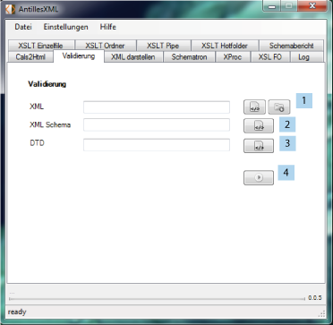

Der Benutzer soll hier die Möglichkeit haben, seine XML-Dokumente entweder gegen eine Documenttype
Definition, oder eine XML Schema Datei validieren zu können. Bei Fehlern bzw. Verstößen sollen diese
in einem Log dargestellt werden. Auch diese Funktion soll ordnerweise möglich sein.

Zunächst muss die Eingabe Datei (oder Ordner) angegeben werden (1). Nun das XML-Schema (2) oder die DTD (3). Dann kann die Operation gestartet werden (4)